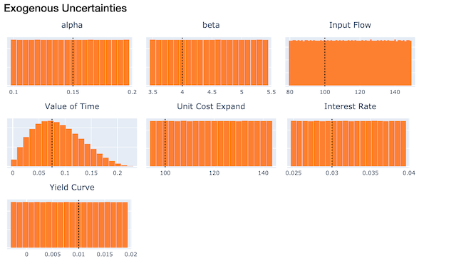
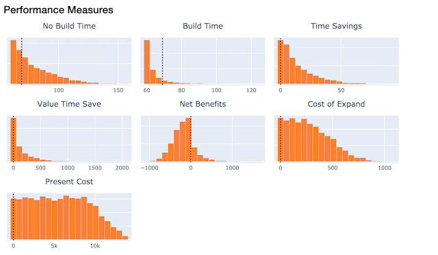
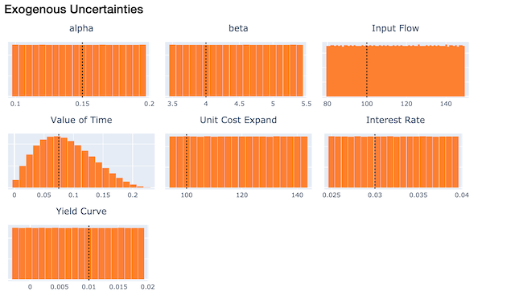
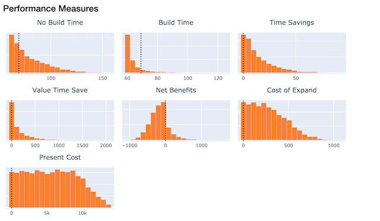
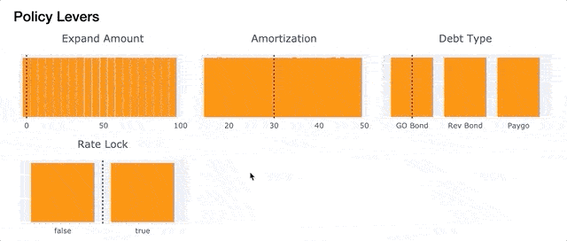

Interactive Visualizer¶
TMIP-EMAT includes an interactive visualizer, inspired by a similar tool provided with the VisionEval package. To demonstrate the interactive visualizer, we will use the Road Test example model. First, we need to develop and run a design of experiments to have some data to explore. We’ll run 5,000 experiments to get a good size sample of data points to visualize.
import emat.examples
scope, db, model = emat.examples.road_test()
design = model.design_experiments(n_samples=5000)
results = model.run_experiments(design)
One feature of the visualizer is the ability to display not only a number of results,
but also to contrast those results against a given “reference” model that represents
a more traditional single-point forecast of inputs and results. We’ll prepare a
reference point here using the
run_reference_experiment
method, which reads the input parameter defaults (as defined in the scope),
and returns both inputs and outputs in a DataFrame (essentially, an experimental
design with only a single experiment), suitable for use as the reference point marker in our
visualizations.
refpoint = model.run_reference_experiment()
The interactive visualizer class can be imported from the emat.analysis package.
To use it, we create an Visualizer instance, giving a scope and a set of
experimental results, as well as the reference point.
from emat.analysis import Visualizer
viz = Visualizer(scope=scope, data=results, reference_point=refpoint)
Single Dimension Figures¶
To build a complete interactive workspace similar to that provided by VisionEval, we
can use the complete method on the viz instance we created above. This will
create a set of histograms illustrating the data in the results computed above. There
is one histogram for each policy lever, exogenous uncertainty, and performance measure.
 



A range of data in each histogram can be selected by dragging horizonatally across the figure. For continuous parameters (i.e. float or integer valued parameters) you can select a single contiguous range by dragging across that range, and deselect by double clicking on the figure (or by selecting the entire possible range). For discrete parameters (i.e. boolean or categorical parameters, identifiable by the larger gaps between the bars in the figure) dragging across the center of any bar toggles whether that bar is selected or not. This allows non-contiguous selections in categories that have 3 or more possible values. Like the other figures, any selection can be cleared by double-clicking.
Selections can be made simultaneously over any combination of uncertainties, policy levers, and performance measures. The combination of controls offered can be used interactively to select and highlight only a subset of the experiments in the complete data set. By manipulating these controls, users can explore the interaction across various inputs and outputs.
It is also possible to display just a small subset of the figures of this interactive viewer. This could be convenient, for example, if there are a very large number of performance measures.
viz.selectors(['input_flow', 'expand_capacity', 'net_benefits'])
Changing Selections¶
In addition to manipulating the controls interactively within the Jupyter notebook, they can also be
set programatically from Python code. To do so, we can define a new emat.Box
that declares lower and/or upper bounds for any continuous dimensions,
as well as the set of allowed (included) value for any discrete dimensions,
and then add that new box to this visualizer using the
add_box command.
box = emat.Box("Passable", scope=scope)
box.set_upper_bound('cost_of_capacity_expansion', 400)
box.set_lower_bound('time_savings', 5)
box.remove_from_allowed_set('debt_type', 'GO Bond')
viz.add_box(box)
Alternatively, a new box can be created and added to the Visualier
with a single new_box command, which
passes most keyword arguments through to the emat.Box constuctor.
viz.new_box('Profitable', lower_bounds={'net_benefits':0})
Each of these new boxes is added to the Visualizer seperately. You can
switch between different active boxes using the dropdown selector at the top
of the complete interface – this same selector is available within the
smaller status widget:
viz.status()
You can also programatically find and change the active box from Python.
>>> viz.active_selection_name()
'Profitable'
>>> viz.set_active_selection_name("Passable")
>>> viz.active_selection_name()
'Passable'
When interactively changing bounds by dragging on figures, the currently
“active” box is modified with the revised bounds. The entire set of
bounds can be cleared at once with the clear_box
method, which by default
clears the settings on the active box selection; give a name to clear the
settings from a different box selection.
If instead we want to manipulate an existing box selection, we can access the
Box object, manipulate it
(e.g. by using remove_from_allowed_set
or add_to_allowed_set),
and write it back into the Visualizer.
box = viz['Profitable']
box.remove_from_allowed_set('debt_type', 'Rev Bond')
viz['Profitable'] = box
Selections can also be made that are not rectangular boxes. One way to
do this is to write out an expression that can be evaulated using the
underlying DataFrame of experiments (with pandas’ build in eval method).
We can pass any string that can be evaluated to new_selection
to create a new static selection. When static selections are active, the
“selected” color of the figures changes from orange, to highlight the
fact that the selection is not a simple rectangular Box
and cannot be modified by dragging on figures as shown before. But we can
still view this static selection in a number of ways, and use if for certain
types of analysis (e.g. as a target for PRIM, see below).
viz.new_selection(
"time_savings * input_flow > 1000 & cost_of_capacity_expansion < 300",
name="TimeSaved"
)
Two Dimension Figures¶
The Visualizer object can also create an interactive two-dimensional scatter plot,
using the two_way method. This method allows the user to specify the variables
for both the x and y axis, and either can be any policy lever, exogenous
uncertainty, or performance measure. These dimensions can be changed interactively
later as well. The resulting scatter plot is linked to the same selection of
experiments in the interactive one-dimensional figures shown above, and by default
the same experiments are highlighted in the same color scheme in all of these related
figures.
viz.set_active_selection_name("Profitable")
viz.two_way(x='expand_capacity', y='time_savings')
One useful feature of the two_way is the ability to manually “lasso” a selection of
data points. This lasso selection does not need to be anything like a rectangular
box selection, as we have seen so far. Once a lasso selection of data points is made
in the figure above, you can choose “Use Manual Selection” from the Edit Selection…
menu at right, which will create a new Visualizer selection from the selected data.
The highlight color changes to signify that this is not an editable rectangular box,
and the selected data will be highlighted in all figures linked to this Visualizer,
including the histograms above.
In addition to the two_way, which offers a feature-packed view of two dimensions at a time,
there is also a scatter plot matrix Visualizer.splom() option, which displays a configurable matrix of similar
two dimensional views.
viz.splom(
rows=('expand_capacity','time_savings','net_benefits'),
cols='L',
)
Dynamic Feature Scoring¶
EMAT can score the relative importance of inputs for an experiment being within the selection, either for a typical rectangular selection based on thresholds, or for any arbitrary selection. These scores are recomputed and updated in near-real-time as the thresholds are adjusted.
When the selection includes rectangular thresholds set on both inputs and outputs, the thresholded inputs are automatically excluded from the scoring algorithm.
viz.selection_feature_scores()
Interactive PRIM¶
The PRIM tools are available directly within the interactive explorer. You can use
any existing named selection as the target, whether it be created as a Box,
lasso, or from an expression. Or, you can write a new expression as the PRIM target.
prim = viz.prim(target="net_benefits >= 0")
The tradeoff selector is directly integrated into the explorer. In addition
to the information visible by hovering over any point in the tradeoff selector
figure, clicking on that point will create a two new selection in the explorer,
a “Target” selection which highlights the PRIM target with the selected PrimBox
bounds overlaid, and a “Solution” selection which converts the selected PrimBox
into a standard emat.Box, settinh all of the interactive constraints to the
bounds given by that particular point. This highlights all the data points that are inside the
box, instead of those in the original target. In this manner you can use PRIM to
manipulate the constraints on parameters to achieve a particular set of goals in a soft
manner, instead of putting hard constraints directly as the performance measure
goals.
prim.tradeoff_selector()
We can also use PRIM to explore solutions based only on manipulating the policy levers, and not the combination of all inputs (levers & uncertainties).
prim_levers = viz.prim('levers', target="Profitable")
prim_levers.tradeoff_selector()
Visualizer API¶
- class emat.analysis.Visualizer(data, selections=None, scope=None, active_selection_name=None, reference_point=None, *, db=None)[source]¶
A data visualization framework.
- Parameters:
data (pandas.DataFrame or str) – The base data to visualize. Give the data directly as a DataFrame, or give the name of a design that can be loaded from the db Database.
selections (Mapping or pandas.DataFrame, optional) – Any pre-existing selections. Each selection should be a boolean pandas.Series indexed the same as the data.
scope (emat.Scope, optional) – The scope that describes the data.
active_selection_name (str, optional) – The name of the selection to activate.
reference_point (Mapping or pandas.DataFrame) – An optional reference point to visualize. Give as a simple mapping, or as a one-row DataFrame with the same columns as data, or give the name of a one-row design that can be loaded from the db Database.
db (emat.Database, optional) – A database from which to read content.
Manipulating Selections¶
- Visualizer.add_box(box, activate=True)[source]¶
Add an existing Box to this Visualizer.
- Parameters:
box (emat.Box) – The box to add.
- Visualizer.new_box(name, **kwargs)[source]¶
Create a new Box and add it to this Visualizer.
- Parameters:
name (str) – The name of the selection box to add. If this name already exists in this Visualizer, it will be overwritten.
activate (bool, default True) – Immediately make this new box the active selection in this Visualizer.
**kwargs – All other keyword arguments are forwarded to the
emat.Boxconstructor.
- Returns:
The newly created box.
- Return type:
- Visualizer.clear_box(name=None)[source]¶
Clear the contents of an editable selection box.
If the selection to be cleared is not editable (i.e. if it is not based on an
emat.Box) this method does nothing.- Parameters:
name (str, optional) – The name of the box to clear. If not specified, the currently active selection is cleared.
- Visualizer.new_selection(value, name=None, color=None, activate=True)[source]¶
Add a new selection set to the Visualizer.
- Parameters:
value (Box, PrimBox, str, or array-like) – The new selection. If given as an emat.Box, the selection is defined entirely by the boundaries of the box, as applied to the visualizer data. If given as a PrimBox, the box boundaries are defined by the selected point on the peeling trajectory (and are immutable within the Visualizer interface), but the selection is taken from the Prim target. If given as a str, a new immutable selection array is created by evaluating the string in the context of the visualizer data. If given as an array-like, the array is used to explicitly define an immutable selection.
name (str, optional) – A name for this selection. If not given, the name is inferred from the name attribute of the value argument, if possible.
color (str, optional) – A color to use for this selection, in “rgb(n,n,n)” format. If not provided, a default color is selected based on the type of value.
activate (bool, default True) – Whether to immediately make this new selection as the “active” selection for this visualizer.
- Raises:
TypeError – If name is not a string or cannot be inferred.
Single Dimension Views¶
- Visualizer.complete(measures=None)[source]¶
Display status and selector widgets for all dimensions.
- Returns:
ipywidgets.Box
- Visualizer.selectors(names)[source]¶
Display selector widgets for certain dimensions.
This method returns an ipywidgets Box containing the selector widgets.
- Parameters:
names (Collection[str]) – These names will included in this set of widgets. If the name is not found in the scope or this visualizer’s data, a warning is issued but the remaining valid widgets are still returned.
- Returns:
ipywidgets.Box
- Visualizer.lever_selectors()[source]¶
Display selector widgets for all policy levers.
- Returns:
ipywidgets.Box
Multi Dimension Views¶
- Visualizer.two_way(key=None, reset=False, *, x=None, y=None, use_gl=True, minimum_marker_opacity=0.25)[source]¶
Create or display a two-way widget.
- Parameters:
key (hashable, optional) – A hashable key value (e.g. str) to identify this two_way widget. Subsequent calls to this command with he same key will return references to the same widget, instead of creating new widgets.
reset (bool, default False) – Whether to reset the two_way widget for the given key. Doing so will create a new two_way widget, and will break any other existing references to the same keyed widget (they will no longer live update with this visualizer).
x (str, optional) – The names of the initial x- and y-axis dimensions to display. Because the resulting figure widget is interactive, these dimensions may be changed later.
y (str, optional) – The names of the initial x- and y-axis dimensions to display. Because the resulting figure widget is interactive, these dimensions may be changed later.
use_gl (bool, default True) – Use Plotly’s Scattergl instead of Scatter, which may provide some performance benefit for large data sets.
minimum_marker_opacity (float, default 0.25) – This is the minimum marker opacity used, notwithstanding any transparency level implied by target_marker_opacity.
- Returns:
TwoWayFigure
- class emat.analysis.TwoWayFigure(**kwargs: Any)[source]¶
The two-way visualizer widget.
This class encapsulates a TMIP-EMAT interactive widget that displays a configurable two dimensional scatter plot of Visualizer data. Dropdown menus allow the user to change the data dimensions displayed on the x and y axes, as well as create and manipulate new selection sets directly from the interactive widget.
- Parameters:
viz (emat.Visualizer) – The visualizer object to link for this two-way.
target_marker_opacity (numeric, default 1000) – The number of scatter point markers to display fully opaque. If the number of markers displayed exceeds this value, each marker is rendered partially transparent, such that the total marker weight (opacity * number of markers) is loosely approximate to this total value.
minimum_marker_opacity (float, default 0.25) – This is the minimum marker opacity used, notwithstanding any transparency level implied by target_marker_opacity.
use_gl (bool, default True) – Use Plotly’s Scattergl instead of Scatter, which may provide some performance benefit for large data sets.
- Visualizer.splom(key=None, reset=False, *, cols='M', rows='L', use_gl=True)[source]¶
Create or display a scatter plot matrix widget.
- Parameters:
key (hashable, optional) – A hashable key value (e.g. str) to identify this splom widget. Subsequent calls to this command with he same key will return references to the same widget, instead of creating new widgets.
reset (bool, default False) – Whether to reset the two_way widget for the given key. Doing so will create a new splom widget, and will break any other existing references to the same keyed widget (they will no longer live update with this visualizer).
cols (str or Collection[str]) – The dimensions to display across each of the columns (rows) of the scatter plot matrix. Can be given as a list of dimension names, or a single string that is some subset of ‘XLM’ to include all uncertainties, policy levers, and/or performance measures respectively.
rows (str or Collection[str]) – The dimensions to display across each of the columns (rows) of the scatter plot matrix. Can be given as a list of dimension names, or a single string that is some subset of ‘XLM’ to include all uncertainties, policy levers, and/or performance measures respectively.
use_gl (bool, default True) – Use Plotly’s Scattergl instead of Scatter, which may provide some performance benefit for large data sets.
- Returns:
plotly.FigureWidget
- Visualizer.hmm(key=None, reset=False, *, cols='M', rows='L', emph_selected=True, show_points=30, size=150, with_hover=True)[source]¶
Create or display a heat map matrix widget.
- Parameters:
key (hashable, optional) – A hashable key value (e.g. str) to identify this hmm widget. Subsequent calls to this command with he same key will return references to the same widget, instead of creating new widgets.
reset (bool, default False) – Whether to reset the two_way widget for the given key. Doing so will create a new hmm widget, and will break any other existing references to the same keyed widget (they will no longer live update with this visualizer).
cols (str or Collection[str]) – The dimensions to display across each of the columns (rows) of the heat map matrix. Can be given as a list of dimension names, or a single string that is some subset of ‘XLM’ to include all uncertainties, policy levers, and/or performance measures respectively.
rows (str or Collection[str]) – The dimensions to display across each of the columns (rows) of the heat map matrix. Can be given as a list of dimension names, or a single string that is some subset of ‘XLM’ to include all uncertainties, policy levers, and/or performance measures respectively.
emph_selected (bool, default True) – Emphasize selected points, using a variety of techniques to ensure that small sized selections remain visible. If disabled, when small sized selections are shown from large visualization datasets, the selected points will typically become washed out and undetectable.
show_points (int, default 30) – If emph_selected is true and the number of selected points is less than this threshold, the selection will be overlaid on the heatmap as a scatter plot instead of a heatmap colorization.
size (int, default 150) – The plot size for each heatmap.
- Returns:
plotly.FigureWidget
- Visualizer.parcoords(key=None, reset=False, *, coords='XLM')[source]¶
- Parameters:
key (hashable, optional) – A hashable key value (e.g. str) to identify this parcoords widget. Subsequent calls to this command with he same key will return references to the same widget, instead of creating new widgets.
reset (bool, default False) – Whether to reset the parcoords widget for the given key. Doing so will create a new parcoords widget, and will break any other existing references to the same keyed widget (they will no longer live update with this visualizer).
coords (str or Collection[str]) – Names of the visualizer dimensions to display in this parcoords widget. Give a list-like set of named dimensions, or a string that is some subset of ‘XLM’ to include all uncertainties, policy levers, and/or performance measures respectively.
- Returns:
A parallel coordinates plot.
- Return type:
plotly.FigureWidget
Analytical Tools¶
- Visualizer.prim(data='parameters', target=None, **kwargs)[source]¶
Create a new Prim search for this Visualizer.
- Parameters:
data ({'parameters', 'levers', 'uncertainties', 'measures', 'all'}) – Limit the restricted dimensions to only be drawn from this subset of possible dimensions from the scope. Defaults to ‘parameters` (i.e. levers and uncertainties).
target (str, optional) – If not given, the current active selection is used as the target for Prim. Otherwise, give the name of an existing selection, or an expression to be evaluated on the visualizer data to create a new target.
**kwargs – All other keyword arguments are forwarded to the emat.analysis.Prim constructor.
- Returns:
emat.analysis.Prim